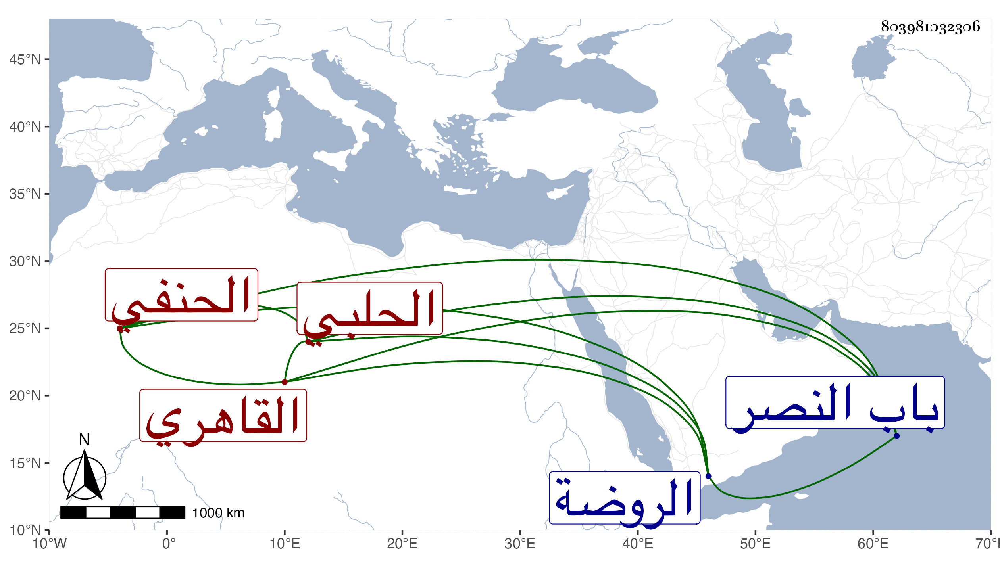

0902Sakhawi.DawLamic.ITO20230111-ara1.EIS1600.803981032306
Biography ID: 803981032306
388
محمد بن علي بن أحمد بن عبد الله ناصر الدين الحلبي الأصل القاهري الحنفي ويعرف بلقبه . مات وقد جاز الأربعين في ذي القعدة سنة أربع وسبعين وصلي عليه ثم دفن تجاه الروضة خارج باب النصر ، وكان فاضلا بارعا مفننا متقنا مديما للاشتغال والأشغال مع الديانة التامة والسكون وعدم التكثر بفضائله والإقبال على شأنه والازدياد من المحاسن بحيث قل أن يكون في أقرانه نظيره . ومن شيوخه الأمين الأقصرائي والشمني والحصني والكافياجي والعز عبد السلام البغدادي والشرواني والكريمي بل وسمع الحديث على الشريف النسابة والنور البارنباري وأم هانئ الهورينية وحضر عندي بعض مجالس الإملاء رحمه الله وعوضه الجنة .
